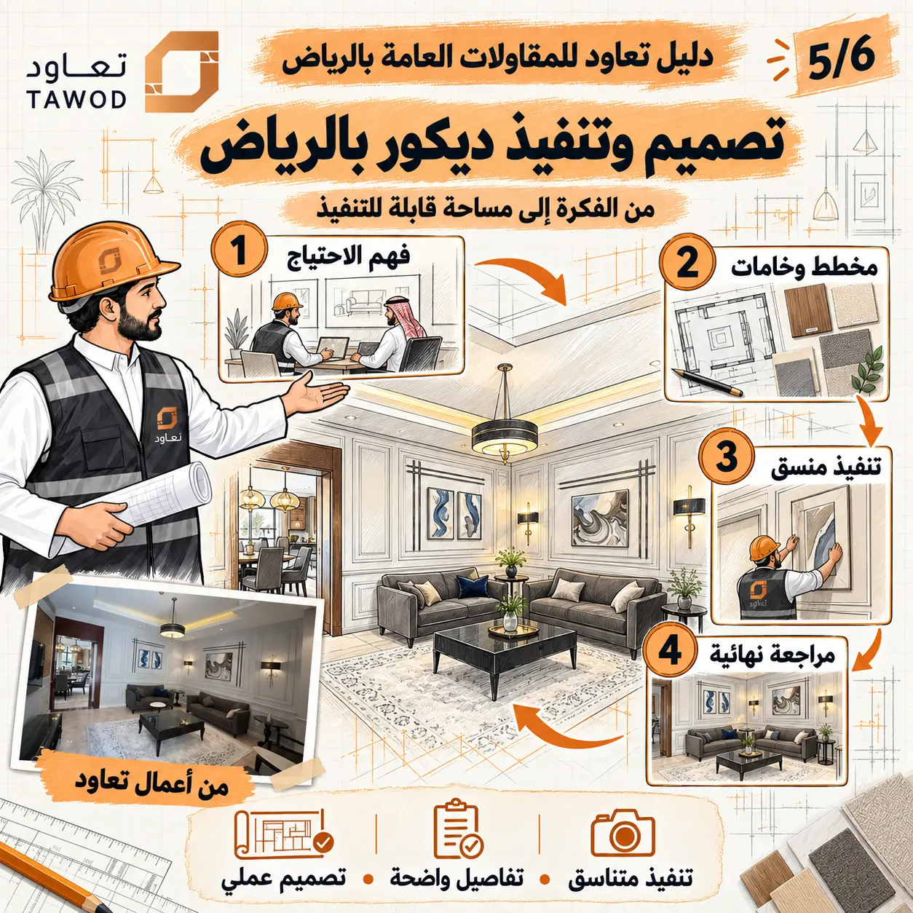

يبدأ تصميم وتنفيذ ديكور بالرياض من سؤال الاستخدام لا من اختيار لون. من سيجلس هنا؟ كيف يتحرك؟ أين التخزين؟ ما المشهد الذي يراه عند الدخول؟ وما الأجهزة والخدمات التي تحتاج وصولًا وصيانة؟ الإجابات تتحول إلى توزيع، ثم إلى مواد وإضاءة وتفاصيل، ثم إلى حزمة يستطيع المقاول تسعيرها وتنفيذها.
عندما ينفصل التصميم عن الواقع تظهر فجوات: قطعة أثاث لا تناسب المسار، سقف يخفي فتحة صيانة، كسوة تتعارض مع مفتاح أو باب، أو خامة جميلة يصعب توفيرها وصيانتها. لذلك يجمع هذا الدليل أربع مراحل من فهم الاحتياج إلى المراجعة النهائية.
المرحلة الأولى: فهم الاحتياج وصناعة ملف المشروع
ملف المشروع أو الـbrief يحدد المستخدمين والفراغات والأنشطة والأولوية والأسلوب والميزانية التقريبية والموعد والعناصر التي ستبقى. لا يُسأل العميل عن «مودرن أم كلاسيك» فقط؛ بل عن طريقة الضيافة، التخزين، الأطفال، الخصوصية، سهولة التنظيف، المرونة والتقنيات التي سيستخدمها.
الاستخدام
عدد المستخدمين والأنشطة ومسارات الحركة والتخزين والخصوصية.
الهوية
الإحساس المطلوب والألوان والمرجع البصري وما يجب تجنبه.
الحدود
المساحات المشمولة والعناصر القائمة ونطاق التصميم أو التنفيذ.
القرار
صاحب الاعتماد والميزانية والموعد وتسلسل المخرجات.
رفع المقاسات وقراءة الموقع الحقيقي
تُراجع أبعاد الجدران والفتحات والمناسيب والأعمدة والأسقف ومواقع اللوحات والمصارف وفتحات التكييف والإنارة. كما تُصور اتجاهات المشاهدة ودخول الضوء والعناصر التي لا تظهر في المخطط. التصميم المبني على قياس قديم أو مخطط غير مطابق ينقل الخطأ إلى النجارة والكسوات والأثاث.
إذا كان الموقع تحت الإنشاء، يُحدد تاريخ إعادة القياس قبل التصنيع. فالمقاس الإنشائي يختلف عن المقاس بعد اللياسة والأرضيات، وبعض القطع تحتاج قياسًا نهائيًا بعد اكتمال الطبقات السابقة.
المرحلة الثانية: الفكرة والتوزيع والخامات
يبدأ المفهوم بتوزيع الفراغات والأثاث ومسارات الحركة، ثم الإضاءة والمواد والألوان. تُراجع البدائل على الاستخدام والميزانية والصيانة والتوفر، لا على الصورة فقط. في الرياض قد تؤثر شدة الضوء والغبار والاستخدام اليومي في اختيار الأقمشة والأسطح والواجهات الزجاجية، ويجب تحويل ذلك إلى خصائص عملية قابلة للمقارنة.
تُعرض لوحة الخامات مع عينات حقيقية عندما يكون اللون أو الملمس حساسًا. كما تُراجع المواد تحت إضاءة قريبة من إضاءة المشروع؛ لأن اللون على الشاشة قد يختلف عن العينة وعن النتيجة بعد التركيب.

ما الذي يجب أن تحتويه حزمة التنفيذ؟
تختلف المخرجات حسب النطاق، لكنها قد تضم مخطط توزيع الأثاث، الأرضيات، الأسقف والإنارة، نقاط الكهرباء، تفاصيل الجدران والكسوات، جداول الأبواب والنجارة، لوحات المواد والألوان والتفاصيل التنفيذية. الهدف أن يعرف كل منفذ ماذا يصنع وأين وكيف يرتبط بباقي البنود.
يمكن مراجعة دليل التصميم الداخلي للفلل للمساحات السكنية، ودليل التصميم التجاري بالرياض للمحلات والمكاتب ومتطلبات التشغيل المختلفة.
تنسيق الإضاءة والكهرباء والتكييف والنجارة
تُراجع نقطة الإضاءة مع السقف والستارة والأثاث، والمفتاح مع فتح الباب والكسوة، وفتحة التكييف مع خطوط الجبس والنجارة، والمصرف مع منسوب الأرضية. يستخدم الفريق مخطط تنسيق أو اجتماعات واعتمادات موثقة لحل التعارض قبل الإغلاق.
كما يجب الحفاظ على إمكانية الصيانة. الجمال لا يبرر إخفاء محبس أو لوحة أو فتحة خدمة من دون وصول مناسب. تفصيل الصيانة جزء من التصميم القابل للحياة، لا إضافة بعد اكتمال الموقع.
المرحلة الثالثة: تنفيذ منسق واعتمادات الموقع
يبدأ التنفيذ بعينة أو نموذج للتفاصيل المؤثرة، ثم تُعتمد الخامات والرسومات التنفيذية وقياسات الموقع. تُسجل الأسئلة في سجل استفسارات، ويصدر الرد للجهات المتأثرة بدل اتخاذ قرارات متفرقة. وعند ظهور تعارض، يُراجع أثر الحل على الشكل والأداء والتكلفة والمدة.
التصميم والتنفيذ من جهة واحدة قد يقللان فجوة التواصل، لكن ذلك لا يلغي الحاجة إلى اعتماد مكتوب ومعيار استلام. يجب أن تكون الصورة المرجعية مرتبطة بتفصيل وعينة، وأن تكون مسؤولية التوريد والتصنيع والتركيب والحماية محددة.
المرحلة الرابعة: المراجعة النهائية والتسليم
تُراجع المساحة بعد التنظيف وفي سيناريوهات إضاءة مختلفة. يُفحص محاذاة العناصر والفواصل والحواف والألوان وعمل الأبواب والأدراج والإنارة والمفاتيح وإمكانية الصيانة. تُسجل الملاحظات بالموقع والصورة، ثم تُغلق قبل التصوير أو الاستلام النهائي.
يشمل التسليم بحسب العقد الرسومات النهائية وقائمة الخامات والضمانات وتعليمات العناية والعينات الاحتياطية المتاحة. وجود هذه البيانات يجعل صيانة الديكور واستبدال أي عنصر مستقبلًا أكثر تنظيمًا.
كيف تختار شركة تصميم داخلي بالرياض؟
افحص طريقة فهم الاحتياج، مستوى الرسومات والتفاصيل، خبرة التنسيق والتنفيذ، وضوح عدد المراجعات والمخرجات والمدة وحقوق استخدام الملفات. اطلب رؤية مثال لحزمة تنفيذ، لا صور النتيجة فقط. ثم قارن العرض على نطاق موحد يوضح هل هو تصميم فقط أم تصميم وتنفيذ ديكور.
لديك مساحة تريد تصميمها وتنفيذها؟
شاركنا المخطط وصور الموقع والاستخدام والأسلوب المفضل والميزانية التقريبية، لنحدد نطاق التصميم والمخرجات والخطوة التالية بوضوح.
ابدأ من ملف الاحتياجتابع أدلة التشطيب والتصميم الداخلي
انتقل إلى الدليل المحوري أو الأدلة المرتبطة، ثم إلى الخدمة عندما تصبح جاهزًا للتنفيذ.